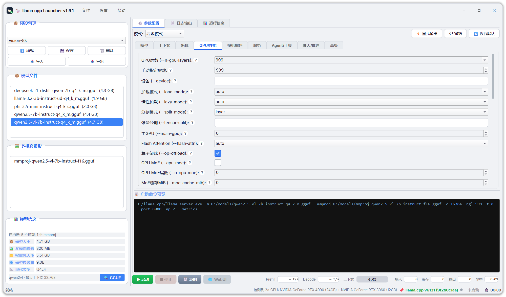
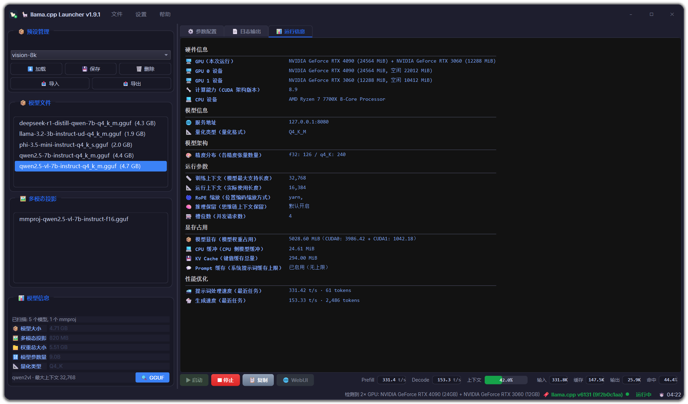

01 · 入门
产品概览
功能完整的 llama-server（llama.cpp）GUI 启动器。它驱动的是你自己安装的 llama-server 二进制 —— 一切行为可见，一切行为可控。
不同的路线：驱动你自己的 llama-server
大多数 GUI 工具（Ollama、LM Studio 等）内置固定版本的 llama.cpp，且命令行对用户不可见。Llama CPP Launcher 走的是另一条路：它驱动的是*你自己*安装的 llama-server。
| 能力 | Llama CPP Launcher | 内置后端的工具 |
|---|---|---|
| 升级 llama.cpp | 换个二进制文件，完事 | 等应用更新 |
| 自定义编译（CUDA / ROCm / Vulkan / Metal / SYCL） | 任意构建都能用 | 只能用内置版本 |
| 体验最新提交 | 今天编译，今天跑 | 等几周甚至几个月 |
| 回退版本 | 换回旧二进制文件 | 祈祷官方提供 |
| 应用实际执行的命令 | 始终可见，一键复制 | 黑盒 |
自动与你的二进制保持同步
- 动态默认值检测
- 启动时运行
llama-server --help，解析*你的*二进制版本的真实默认值。不存在过时的硬编码，版本漂移还会通过 ⚠ 指示器提示。 - 聊天模板自动发现
- 你的二进制内置的聊天模板会自动出现在 UI 中。
- GPU 检测
- 通过
--list-devices探测，在状态栏（版本号左侧）显示，例如「检测到 2× GPU：RTX 5090 (32GB) + RTX 2080 (8GB)」。只展示，不自动填写 —— 永远由你决定。
轻量且私密
整个应用约 16,000 行 Python，唯一运行时依赖是 PyQt6。无内置后端、无账号、无遥测、不联网上报，100% 本地运行。
获取方式
- Windows：从 GitHub Releases 下载
LlamaCppLauncher.exe，双击即运行，无需安装 Python。 - 源码：任意系统（Python 3.11+），步骤见快速开始。
- 许可：MIT —— 想怎么用就怎么用。
02 · 入门
快速开始
两条路线：Windows exe 完全不需要环境准备；源码方式适用于任意系统。
方式一 · Windows exe（推荐）
- 从 Releases 下载
LlamaCppLauncher.exe，双击运行 —— 无需安装 Python。 - 安装
llama-server（如从 ggml-org/llama.cpp releases 下载预编译版本）。 - 在应用中：**文件 → 设置 llama-server 路径…**，指向该二进制文件；或把它加入
PATH—— 启动器会自动找到。 - 选模型，点启动，打开 WebUI。搞定。
Windows SmartScreen 可能警告未签名的可执行文件 —— 点击更多信息 → 仍要运行即可。
方式二 · 从源码运行（任意系统）
git clone https://github.com/Mars-Albert/llama-cpp-launcher.git cd llama-cpp-launcher python -m venv venv venv\Scripts\activate # Windows source venv/bin/activate # Linux / macOS pip install -r requirements.txt python main.py # Windows 下也可双击 run.bat
requirements.txt 将 PyQt6 锁定为 6.11.0 —— 应用针对恰好这个运行时进行测试。
第一次运行之后
选好模型点启动后：彩色状态指示与运行计时器（MM:SS）出现；运行时信息面板开始从服务端日志实时解析填充；命令预览显示交给 llama-server 的精确命令。详见服务生命周期。
03 · 界面与模式
窗口与界面
无边框圆角卡片窗口，一体式标题行，所有对话框同属一个视觉家族。


无边框圆角卡片窗口
应用自绘卡片与柔和投影：一体式标题行（图标 · 标题 · 菜单 · Win11 风格的最小化 / 最大化 / 关闭按钮）；拖动移动、双击最大化，贴住可见卡片边缘即可边缘缩放；最大化时卡片铺满全屏，并使用系统自身的圆角。
右栏 · 3 个标签页 + 常驻控制行
整个右栏是一个标签页控件 —— ⚙ 参数配置 · 📄 日志输出 · 📊 运行信息 —— 每个标签页都拿到整列高度（1080p 窗口下日志区约 800px，而不是过去那条 200px 的窄缝）。标签页下方是控制行：左侧 ▶ 启动 · ■ 停止 · 📋 复制 · 🌐 WebUI，右侧是实时指标带；它在标签页之外，因此开着哪个标签页都能用。参数配置页内部，参数区与命令预览之间还有一条可拖动分割线。
| 标签页 | 内容 | 备注 |
|---|---|---|
| ⚙ 参数配置 | 基础 / 高级模式切换条、参数分组、命令预览 | 上下两块可拖动分割 |
| 📄 日志输出 | 搜索、级别过滤、导出，独占整列高度 | Ctrl+F 会自动跳到本页 |
| 📊 运行信息 | 从日志解析出的运行时信息表（见「实时日志解析」） | — |
当前标签页、模式、窗口尺寸与各分割栏宽度都会被记住，下次启动自动恢复。
状态栏
左侧是当前消息（预设已加载、错误提示等）；右侧依次是：
| 项 | 内容 |
|---|---|
| 检测到的 GPU | 如「检测到 2× GPU：RTX 5090 (32GB) + RTX TITAN (24GB)」，来自 --list-devices；悬停看每张卡的显存与空闲量，探针结束前不显示 |
| 版本 | 你的二进制的 --version；二进制比内置参数表更新时变琥珀色 |
| ⚠ 参数漂移 | 只在确实有漂移时出现，点开是完整清单（不被截断） |
| 状态点 + 状态文字 | 灰 = 未启动 · 琥珀 = 启动中，或运行中但 /slots 与 /metrics 都无应答 · 绿 = 运行中 · 红 = 异常 |
| 运行时长 | MM:SS，逐秒刷新 |
统一的对话框与消息框
所有对话框、确认框、错误提示都属于同一无边框卡片家族，深色 / 浅色自适应 —— 风格统一，不突兀。
默认尺寸与状态记忆
首次启动以 1600 × 940（按屏幕可用区钳制）打开，左侧模型栏 400px。窗口大小与位置、基础 / 高级模式、右栏当前标签页、高级模式子页、左右分割宽度、以及参数区 / 命令预览的分割位置，都会在下次启动时自动恢复。
小窗体不塌方
参数区永不出垂直滚动条，控件不会被压缩或重叠：快捷开关自动换行成更多行，并随之增大窗口最小尺寸；极窄窗口下宽行横向滚动。
菜单
| 菜单 | 内容 |
|---|---|
| 文件 | 扫描路径、设置 llama-server 路径、刷新、退出 |
| 设置 | 自定义快捷开关、语言（中 / 英）、主题（深色 / 浅色） |
| 帮助 | 关于 |
04 · 界面与模式
双模式设计
基础模式让模型几秒钟跑起来；高级模式精细调节每一个细节。
两种模式对照
| 基础模式 | 高级模式 |
|---|---|
| 模型 & mmproj 选择器（背后是模型浏览器） | 全部 CLI 参数可视化配置，按职责分 9 个标签页 |
| 温度 / Top-P / Min-P / 重复惩罚滑块 + Top-K 数值框 | LoRA 适配器与缩放、控制向量、图像 Token 限制 |
| 上下文快捷按钮：Default → 4K → 262K | 模型来源：本地文件、HF 仓库、URL、Docker 仓库 |
| GPU 层数 auto / all / 手动，host / port / 并行数 | 投机解码（draft-mtp、ngram、lookup cache） |
| 快捷开关（可自定义，设置 → 自定义快捷开关…）：FlashAttn、推理、分割模式、投机类型、草稿 Token 上限… | 完整服务端配置：SSL、CORS、slots、embedding / rerank、MCP |
| 基础：几秒钟让模型跑起来 · 高级：精细调节每一个细节 | |
自定义快捷开关
基础模式的快捷开关不是固定的：在设置 → 自定义快捷开关…中，可以从候选池（FlashAttn、推理、分割模式、投机类型、草稿 Token 上限等）里挑选并组装属于你自己的那一组。
05 · 界面与模式
基础模式
五组控件，点几下就能把本地推理服务跑起来。
模型与多模态
模型与 mmproj 选择器背后是模型浏览器：自动分类、即时模型信息、按名称自动匹配 mmproj —— 详见模型浏览器。
采样参数
温度、Top-P、Min-P、重复惩罚以滑块给出，Top-K 为数值框 —— 不用记 CLI 参数名，就能调出想要的采样行为。
上下文快捷按钮
Default → 4K → 262K 一键切换。当上下文设置超过模型上限时，模型信息行变琥珀色提示 —— 启动后会被截断。
GPU 与服务
GPU 层数三态：auto / all / 手动；host、port、并行数就地设置。GPU 层数旁显示 --list-devices 的检测结果（只展示，不自动填写）。
快捷开关
常用开关一屏可见：FlashAttn、推理、分割模式、投机类型、草稿 Token 上限…… 这一组可以自定义，见双模式设计。
06 · 界面与模式
高级模式 · 9 个标签页
全部 CLI 参数可视化配置（参数表随 llama.cpp 自身增减），按职责分成 9 个标签页，每个参数行都有「?」帮助按钮。
9 个标签页
| 标签页 | 内容 |
|---|---|
| 模型 | 模型文件、别名、标签、HF / URL / Docker 来源、LoRA、控制向量、mmproj（视觉） |
| 上下文 | 上下文大小、prompt 与 KV 缓存、RoPE / YaRN 缩放 |
| 采样 | 温度、top-k / p、min-p、惩罚项、语法与重复控制 |
| GPU-性能 | 卸载、显存、CPU 线程、亲和性、优先级 |
| 投机解码 | 草稿模型（draft-mtp）、ngram、lookup cache、草稿 Token 数 |
| 服务 | host / port、slots、并行、端点、SSL、CORS、embedding / rerank、router |
| Agent / 工具 | 工具调用、MCP 服务、agent 设置 |
| 聊天-推理 | 聊天模板、推理模式、thinking budget |
| 高级 | 文本 I/O、日志、extra_args 万能出口 |
Schema 是唯一事实来源
UI、CLI 命令生成、get / set 值与国际化覆盖率共享同一份 schema（core/params_schema.py）—— 新增一个参数只需一条记录，不需要手工同步三处。
07 · 模型与服务
模型浏览器
后台线程扫描本地 GGUF 库 —— 界面永不卡顿。
扫描与分类
后台线程扫描模型目录。.gguf 文件自动分类为模型 / 多模态（mmproj），并显示文件大小。
即时模型信息
选中模型的即时信息：文件大小、估算参数量、量化类型。
GGUF 快速元数据行
当前选中模型的架构 + 最大上下文，只解析文件*头部*（几 MB，有缓存，后台线程执行）。当上下文设置超过模型上限时，该行变琥珀色提示 —— 启动后会被截断。
匹配与记忆
- 按名称自动匹配 mmproj 到对应模型；
- 扫描目录跨会话记忆；
- 按 F5 重新扫描。
08 · 模型与服务
服务生命周期
从启动到停止，状态始终可见。
启动与停止
控制行的四个按钮是彩色底 + 白字（与应用其余按钮区分开，这是主操作区）：▶ 启动 · ■ 停止 · 📋 复制 · 🌐 WebUI；启动前端口冲突检测；一键在浏览器中打开 llama-server WebUI。运行状态与计时器在状态栏（灰 / 琥珀 / 绿 / 红 + MM:SS）。
实时指标带
控制行右端是一条单行指标带，三个标签页上都常驻。它直接读服务端自己的端点，不额外起进程，也不从日志里猜：
| 组 | 读数 | 来源 · 频率 |
|---|---|---|
| 实时 | Prefill t/s · Decode t/s · 上下文计量条 + 百分比 | GET /slots · 每秒 |
| 累计 | 输入 tokens · 缓存 tokens · 输出 tokens · 缓存命中率 | GET /metrics · 每 5 秒 |
- 上下文计量条
- 百分比直接写在条里：70% 起转琥珀，90% 起转红，一眼看出还剩多少窗口。
- 速度重新起算
- 计数器差值在本地计算，并在每次任务边界重新起算基线 —— 服务端按任务清零计数器，所以新发起一个请求绝不会算出负速度。
- 开启累计指标
- 累计四个数需要服务端 metrics 端点：高级模式 → 服务 → 「Prometheus指标 (--metrics)」，然后重启服务。第一次采样之前读作 0（累计计数本就从零起算）；确实读不到的值读作
—。每一格的 tooltip 都会说明当前是哪一种情况。 - 排版不抖
- 未运行时七个读数不折叠，数值列按最宽取值定宽，1 秒刷新与点「启动」都不会让这一行重新排版。
优雅停止
停止是非阻塞的，超时强杀兜底；关闭应用时自动停止服务。
撤销
800ms 防抖快照，最多回退 20 步 —— 参数改错了可以撤回来。
命令预览
精确的 llama-server 命令，每次修改即时更新，一键复制；含空格的路径已正确加引号。
llama-server -m "D:/models/Qwen2.5-14B-Instruct-Q4_K_M.gguf" \
--ctx-size 32768 --n-gpu-layers 99 --flash-attn \
--host 127.0.0.1 --port 8080
09 · 模型与服务
预设管理
保存一个名字，下次启动自动恢复你的整组调参。
保存与分享
- 保存 / 加载 / 删除命名预设 —— 只存储与默认值的差异，文件小而可移植。
- 以 JSON 文件导入 / 导出，方便分享；列表中显示创建时间。
- 保存时可选择包含或排除本机路径（model / mmproj），跨机器分享不踩坑。
自动恢复与迁移
- 上次加载的预设会在下次启动时自动恢复。
- 跨 llama.cpp 版本被重命名 / 删除的参数键，会在加载时自动迁移。
10 · 日志与诊断
实时日志解析
llama-server 的每一行输出都会在被打印的同时解析，提炼进运行时信息面板。
解析器共 74 条规则，兼容新旧两种日志格式（含 v9174+ srv 前缀格式）；面板覆盖 8 大类、40+ 数据点。
8 大类数据
| 类别 | 你看到的信息 |
|---|---|
| 硬件 | GPU 名称 / 计算能力 / 每卡总显存与空闲显存、CPU |
| 模型 | 文件、模型名、量化类型、GGUF 版本 |
| 架构 | 参数量、层数、embed / FFN 维度、词表、张量精度分布 |
| 运行参数 | 训练 vs 运行上下文、batch / ubatch、slots、RoPE 频率、thinking 模式 |
| 显存 | 卸载层数、模型 / KV 缓存 / 计算缓冲、预计显存占用 |
| 性能 | Flash attention、KV 统一、图节点数与分割数 |
| 系统 | 线程、OpenMP、repack |
| 视觉 | 编码器状态、mmproj、图像分辨率、最小图像 Token |
实时刷新
面板实时刷新 —— 卸载层数在加载过程中逐步出现，缓冲大小在初始化时填充，服务端开始监听的那一刻，状态立即切换为就绪。
新版 llama.cpp 把自己那些 INFO 行改走 TRACE 回调，若沿用二进制默认的 --log-verbosity 3，本面板基本会是空的。因此启动器把 log_verbosity 默认设为 4（trace），且不采用二进制的动态默认值；级别低于 4 时面板会给出提示。
11 · 日志与诊断
日志面板
一个完整的控制台：可搜索、可过滤、可导出。
搜索与过滤
- Ctrl+F 搜索，带匹配计数与循环查找；
- 级别过滤 —— 调试 / 信息 / 警告 / 错误（默认跟随「错误」级别）；
- 自动滚动开关、清空按钮、按级别着色。
导出
导出可见区域，或完整运行日志 —— 每次运行都会完整镜像到 ~/.llama-cpp-launcher/logs/last_run.log。
每级独立历史窗口
调试 / 信息 / 警告 / 错误各保留自己 5,000 行的窗口。隐藏级别的日志爆发（如 debug 提示词转储）不会把你正在过滤的级别挤掉。
12 · 日志与诊断
GGUF 检查器
内置二进制检查器 —— 不加载权重，纯标准库解析。
7 个标签页
可视化分析
量化分布、层 / 模块结构、参数集中度 —— 一眼看懂模型文件的形态。
启动器感知诊断
不只是通用报告：它会对照当前启动器配置交叉检查 —— 上下文超出模型上限、mmproj 名称不匹配、draft-mtp 缺少 sidecar，以及聊天模板 / RoPE / MoE / 分片信息。
导出
导出 JSON / CSV / Markdown。后台线程解析 + 内存缓存，大文件不卡界面。
13 · 参考
逐参数帮助
每个参数行都有「?」按钮，点开后弹出浮动帮助卡片。
卡片上的四样东西
- CLI 参数名；
- 你二进制版本的实时默认值（来自
--help）； - 取值范围；
- 通俗的解释。
再也不用记 --no-kv-offload 是干什么的了。
一个真实样例
--kv-offload / --no-kv-offload（短参 -nkvo）--help 实时解析）示例 · 取自内置帮助文本「KV 卸载」参数（core/params_help.py）
14 · 参考
国际化与主题
界面语言与主题实时切换，无需重启。
中 ↔ 英
界面语言中 ↔ 英实时切换，无需重启；偏好持久保存，下次启动记住你的选择。
深色 / 浅色
设置菜单（文件 · 设置 · 帮助）一键切换深色 / 浅色主题，自动记忆；日志面板与 GGUF 检查器均随主题适配。本手册页面同样提供深色 / 浅色切换 —— 见顶栏右上角。
15 · 参考
与其他工具对比
差别不在「功能多」，而在它驱动的是你自己安装的 llama.cpp。
能力对比
| 功能 | Llama CPP Launcher | Ollama | LM Studio |
|---|---|---|---|
| 自带 llama.cpp 二进制 | ✓ | ✗ | ✗ |
| 当天使用最新 llama.cpp | ✓ | ✗ | ✗ |
| 任意自定义后端（CUDA / ROCm / Vulkan / Metal / SYCL） | ✓ | ✗ | ✗ |
| 全部 CLI 参数可视化配置 | ✓ | ✗ | 部分 |
| 实际命令可见且可复制 | ✓ | ✗ | ✗ |
| 版本感知的预设迁移 | ✓ | ✗ | ✗ |
| 内置 GGUF 检查器 | ✓ | ✗ | ✗ |
| 无遥测，100% 本地 | ✓ | ✗ | ✓ |
| 单一轻量依赖（PyQt6） | ✓ | — | ✗ |
最关键的三点差异
- 升级 / 回退 = 换二进制：不依赖应用更新节奏，今天编译今天跑。
- 命令始终可见可复制：没有黑盒，排错时你能看到真正执行的参数。
- 预设随版本迁移：llama.cpp 参数改名或删除时，旧预设加载时自动迁移。
16 · 参考
附录 · 开发与许可
面向参与开发的人：构建、结构、发布方式。
开发
- Python 3.11+，PyQt6（版本锁定 6.11.0），pytest 测试；
- 约 16,000 行应用代码，另有约 8,000 行测试（531 个用例，全部无界面运行）；
- 核心 schema（
core/params_schema.py）是 UI、CLI 命令生成、get / set 值、i18n 覆盖率的唯一事实来源 —— 新增一个参数只需一条记录； gguf/、ui/log_parser.py、ui/command_builder.py均不依赖 Qt，可无界面单元测试。- 文档截图是渲染出来的，不是拍出来的 ——
python tools/render_screenshots.py用真实控件 + 合成数据（显卡 / 模型 / 版本 / 日志全是编的），并且刻意把这台机器排除在外：不打桩就会带上 PATH 里解析出的二进制路径、真实的~/.llama-cpp-launcher与--list-devices结果。界面改版后请用它的重出图，不要改用真机截图。
项目结构
llama-cpp-launcher/ ├── main.py # 入口（异步启动、日志配置） ├── run.bat # Windows 启动脚本（激活 venv） ├── build_config.py # 应用名 / 版本（CI 按 tag 改写） ├── llama_cpp_launcher.spec # PyInstaller 构建配置（内嵌图标） ├── requirements.txt ├── core/ │ ├── params_schema.py # ★ 参数 schema（Qt-free，唯一事实来源） │ ├── params_help.py # 逐参数帮助文本（每个参数一条） │ ├── defaults.py # --help 解析、回退默认值、GPU 探测 │ ├── config.py # 预设与设置 IO（~/.llama-cpp-launcher） │ ├── runner.py # QProcess 封装（启动/停止/就绪检测） │ ├── i18n.py # 中/英翻译（中文为源语言） │ └── constants.py ├── gguf/ # 纯标准库 GGUF 二进制读取器 │ ├── parser.py models.py ggml_types.py filename.py diagnostics.py ├── ui/ │ ├── main_window.py # 窗口编排、主题、日志面板 │ ├── frameless.py # 无边框圆角卡片窗口、标题栏、边缘缩放 │ ├── message_box.py # 主题化无边框消息框与对话框基类 │ ├── basic_panel.py # 基础模式（含可自定义快捷开关） │ ├── advanced_panel.py # 高级模式（schema 驱动，9 标签页） │ ├── quick_params.py # 快捷开关候选池 + 控件工厂 │ ├── quick_params_dialog.py # 自定义快捷开关对话框 │ ├── server_path_dialog.py # llama-server 路径对话框 │ ├── param_help.py # "?" 按钮 + 浮动帮助卡片 │ ├── model_browser.py # GGUF 扫描器（后台线程） │ ├── gguf_inspector.py # 7 标签页检查器对话框 │ ├── log_parser.py # 日志行模式 → 运行时信息（Qt-free） │ ├── live_stats.py # /slots + /metrics 轮询、速度差值（Qt-free） │ ├── live_metrics.py # 实时指标带（七个读数 + 上下文计量条） │ ├── command_builder.py # 参数 → llama-server argv（Qt-free） │ └── runtime_info.py # 运行时信息 HTML（Qt-free） ├── tests/ # 31 个测试模块（无界面，内存假数据） └── assets/icon.ico|png
发布
推送 v* tag 触发 CI（windows-latest）：跑测试 → PyInstaller 打包 → 自动发布 exe 到 GitHub Release。
许可
MIT —— 想怎么用就怎么用。源码与最新版本见 GitHub 仓库。